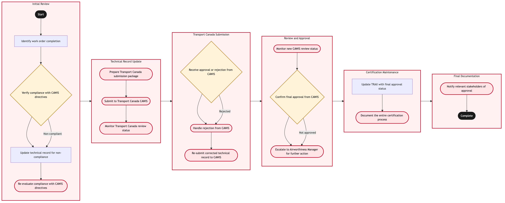

Updated 2026-08-21
Certification and Approval Maintenance with Transport Canada
Process flow
Click to zoom

Process steps
▼
Phase 1 — Initial Review
4 steps
| Step | Activity | Role | System | Input | Output | KPI | Dec | Exc | Pain point |
|---|---|---|---|---|---|---|---|---|---|
| 1.1 | Identify work order completion | Maintenance Control Analyst | TRAXB | Work order status change to 'Completed' | Technical record for review | 95% accuracy in identifying completed work orders | N | N | Manual checks required due to system limitations |
| 1.2 | Verify compliance with CAWIS directives | Airworthiness Engineer | TRAXB | Technical record details | Compliance report | 90% adherence to CAWIS directives | Y | N | Complexity in directive interpretation |
| 1.3 | Update technical record for non-compliance | Maintenance Control Analyst | TRAXB | Compliance report | Updated technical record | 85% update accuracy within 24 hours | N | N | Delays in updating records can impact flight schedules |
| 1.4 | Re-evaluate compliance with CAWIS directives | Airworthiness Engineer | TRAXB | Updated technical record | Final compliance report | 95% final adherence to CAWIS directives | N | Y | Continuous learning required for new directives |
▼
Phase 2 — Technical Record Update
3 steps
| Step | Activity | Role | System | Input | Output | KPI | Dec | Exc | Pain point |
|---|---|---|---|---|---|---|---|---|---|
| 2.1 | Prepare Transport Canada submission package | Certification Specialist | TRAXB | Final compliance report | Submission package | 90% completeness of submission packages | N | Y | Missing documentation can delay submissions |
| 2.2 | Submit to Transport Canada CAWIS | Certification Specialist | CAWISU | Submission package | Submission confirmation | 95% successful submission rate | N | Y | Network issues can disrupt submissions |
| 2.3 | Monitor Transport Canada review status | Certification Specialist | CAWISU | Submission confirmation | Review status update | 90% timely review updates | N | Y | Variable review times from Transport Canada |
▼
Phase 3 — Transport Canada Submission
3 steps
| Step | Activity | Role | System | Input | Output | KPI | Dec | Exc | Pain point |
|---|---|---|---|---|---|---|---|---|---|
| 3.1 | Receive approval or rejection from CAWIS | Certification Specialist | CAWISU | Review status update | Approval or rejection notification | 95% accurate notifications within 2 business days | Y | N | Inconsistent notification times |
| 3.2 | Handle rejection from CAWIS | Certification Specialist | TRAXB | Rejection notification | Corrected technical record | 90% correction accuracy within 48 hours | N | Y | Detailed feedback required for corrections |
| 3.3 | Re-submit corrected technical record to CAWIS | Certification Specialist | CAWISU | Corrected technical record | New submission confirmation | 95% successful re-submission rate | N | Y | Network issues can disrupt submissions |
▼
Phase 4 — Review and Approval
3 steps
| Step | Activity | Role | System | Input | Output | KPI | Dec | Exc | Pain point |
|---|---|---|---|---|---|---|---|---|---|
| 4.1 | Monitor new CAWIS review status | Certification Specialist | CAWISU | New submission confirmation | Review status update | 90% timely review updates | N | Y | Variable review times from Transport Canada |
| 4.2 | Confirm final approval from CAWIS | Certification Specialist | CAWISU | Review status update | Final approval notification | 95% accurate notifications within 2 business days | Y | N | Inconsistent notification times |
| 4.3 | Escalate to Airworthiness Manager for further action | Airworthiness Manager | TRAXB | Final approval notification | Action plan | 90% timely escalation resolution | N | Y | Resource constraints in managing escalations |
▼
Phase 5 — Certification Maintenance
2 steps
| Step | Activity | Role | System | Input | Output | KPI | Dec | Exc | Pain point |
|---|---|---|---|---|---|---|---|---|---|
| 5.1 | Update TRAX with final approval status | Certification Specialist | TRAXB | Final approval notification | Updated technical record | 95% accuracy in updating records | N | N | Manual data entry required |
| 5.2 | Document the entire certification process | Certification Specialist | TRAXB | Final approval notification and updated technical record | Certification documentation | 90% completeness of certification documents | N | Y | Detailed documentation required |
▼
Phase 6 — Final Documentation
1 steps
| Step | Activity | Role | System | Input | Output | KPI | Dec | Exc | Pain point |
|---|---|---|---|---|---|---|---|---|---|
| 6.1 | Notify relevant stakeholders of approval | Certification Specialist | TRAXB | Certification documentation | Stakeholder notification | 95% timely notifications | N | Y | Communication delays with stakeholders |
Swim lanes
Maintenance Control Analyst1.1 1.3
Airworthiness Engineer1.2 1.4
Certification Specialist2.1 2.2 2.3 3.1 3.2 3.3 4.1 4.2 5.1 5.2 6.1
Airworthiness Manager4.3
Systems touched
TRAXBCAWISU
Key performance indicators
- 95% accuracy in identifying completed work orders
- 90% adherence to CAWIS directives
- 85% update accuracy within 24 hours
- 95% final adherence to CAWIS directives
- 90% completeness of submission packages
Risks and control points
- Manual checks required due to system limitations
- Complexity in directive interpretation
- Delays in updating records can impact flight schedules
- Network issues can disrupt submissions
- Variable review times from Transport Canada
Air Canada Process Wiki — process and systems reference compiled from public sources
for IT Application Management and User Support pre-sales discovery.
Built 2026-08-21. Every system carries an evidence tier: tier C is an industry pattern and tier U is an open
question, and neither should be asserted as fact about Air Canada without confirmation in discovery.
Not affiliated with or endorsed by Air Canada. Air Canada, Aeroplan and Altitude are trademarks of Air Canada.